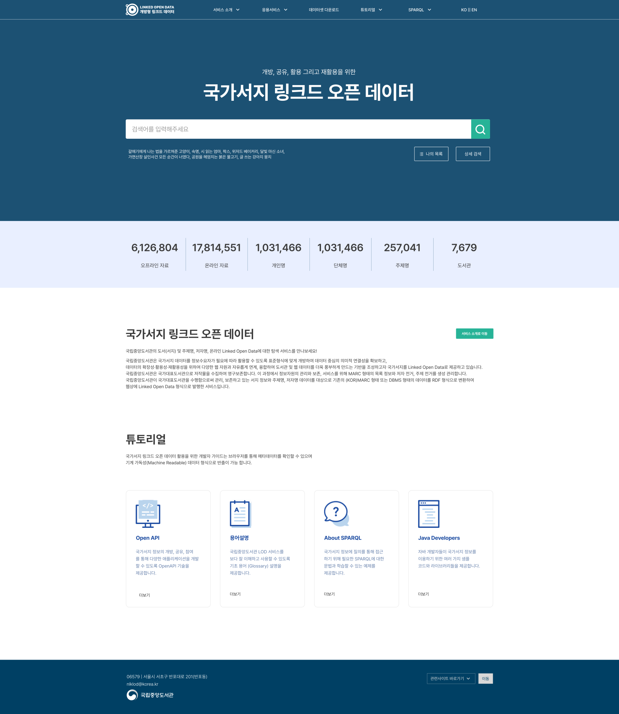
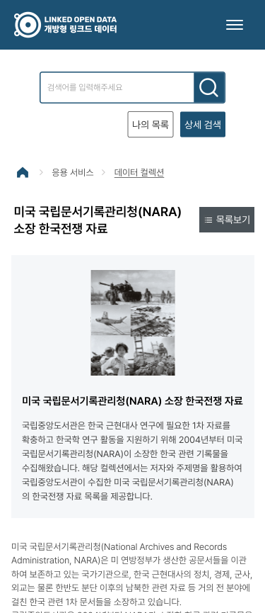

개발자만 쓰던 공공 LOD 데이터를,
연구자·일반 시민 누구나 쉽게 탐색할 수 있도록 —
브랜딩 아이덴티티 정의부터 디자인 시스템 구축,
UI 컴포넌트 설계까지 전 과정을 총괄했습니다.

Project Overview
The Challenge
배경 및 문제점
- 수백만 건의 서지 데이터가 텍스트 나열 방식으로만 제공되어 탐색 경로가 단절되고 사용자 피로도가 높음
- 전문 용어·RDF 구조가 개발자 중심으로 설계되어 일반 연구자·시민의 진입 장벽이 높음
- 공공기관 접근성 가이드라인을 준수하면서 민간 수준의 현대적 UI를 구현해야 하는 설계 과제
The Solution
핵심 해결 방향
- 브랜드 아이덴티티 정의 — NL Blue 기반의 공공 신뢰감과 데이터 탐색의 역동성을 결합한 비주얼 시스템 구축
- 탐색 중심 UX 설계 — 의도 기반 자동완성·추천 검색, 핵심 메타데이터 요약 카드, 다차원 패싯 필터로 탐색 경험 고도화
- 디자인 시스템 구축 — 재사용 가능한 컴포넌트 라이브러리와 접근성 가이드를 문서화하여 개발팀 전달 기준 마련
디자인 의사결정 — Key Design Decisions
공공 신뢰감 × 탐색 역동성
국립중앙도서관의 공공 브랜드 신뢰감을 유지하면서도, 데이터를 능동적으로 탐색하는 경험을 전달하기 위해 NL Blue 컬러 시스템에 그래프 시각화·인터랙티브 요소를 결합했습니다. 단순 정보 나열이 아닌 '발견의 경험'을 설계 방향으로 잡았습니다.
비전문가를 위한 진입 구조 설계
RDF·LOD 전문 용어에 익숙하지 않은 일반 연구자·시민을 위해 키워드 중심 자동완성과 메타데이터 요약 카드를 전면에 배치했습니다. 복잡한 데이터 구조를 뒤로 숨기고, 사용자가 원하는 정보에 최단 경로로 도달할 수 있는 진입 흐름을 설계했습니다.
접근성 기준 내 디자인 품질 확보
공공기관 웹 접근성 가이드(WCAG 기준)를 준수하면서 민간 서비스 수준의 UI 완성도를 구현하기 위해 색상 대비·포커스 이동·스크린리더 레이블을 컴포넌트 단위로 정의했습니다. 접근성과 심미성이 충돌하지 않는 디자인 시스템을 구축했습니다.
Step 01
브랜딩 — 비주얼 시스템 정의
NL Blue 컬러 시스템과 타이포그래피 스케일을 정의하고, 공공 신뢰감과 데이터 탐색의 역동성을 동시에 표현하는 브랜드 비주얼 시스템을 구축했습니다. 이후 모든 컴포넌트 설계의 기준이 되는 디자인 토큰을 문서화했습니다.
Step 02
지식 그래프 — 관계 시각화 UI
복잡한 서지 정보 간의 관계를 그래프 형태로 시각화하여 사용자가 데이터 연결 구조를 직관적으로 파악할 수 있도록 설계했습니다. 노드·링크 기반의 Discovery Flow로 연관 데이터 간 자연스러운 탐색 동선을 구현했습니다.
Step 03
검색 UX — 패싯 필터 & 탐색 피드백
주제·형태·기관·시대 등 다차원 패싯 필터와 실시간 결과 수 카운트로 탐색 피드백을 강화했습니다. 의도 기반 자동완성과 추천 검색으로 사용자가 검색어를 몰라도 원하는 데이터에 도달할 수 있는 UX를 구현했습니다.



Impact & 성과
공공 LOD UX 레퍼런스 확립
이후 공공 LOD 구축 프로젝트의 UX·디자인 레퍼런스로 활용. 접근성 기준을 충족하면서 민간 수준 사용성을 구현한 첫 사례.
데이터 접근성 대폭 확장
오프라인 서지자료 수백만 건을 온라인 데이터 1천만+ 건으로 확장. 누구나 검색·활용 가능한 개방형 구조 구현.
사용자 반응
"찾기 쉽다", "구조가 직관적이다" 등 긍정적 피드백 다수. 개발자 전용 서비스에서 일반 연구자·시민 중심 서비스로 전환 성공.